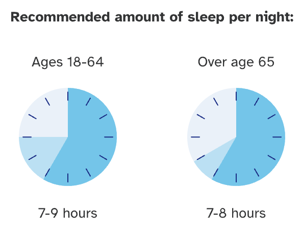
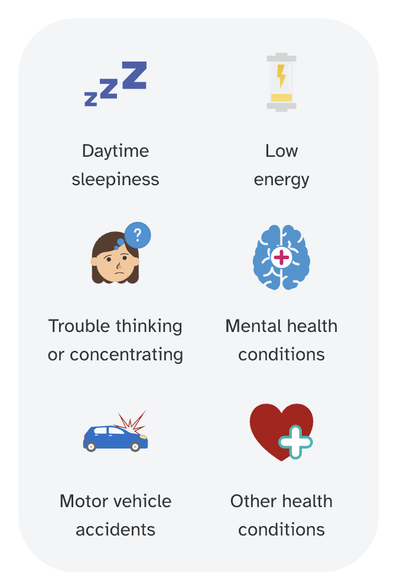
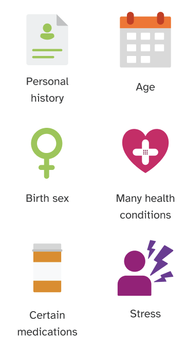

What is insomnia?
Insomnia is a sleep disorder that causes trouble sleeping. Everyone has a hard time sleeping from time to time, but insomnia causes persistent problems with falling asleep, staying asleep, and waking up too early. Insomnia can last a few days or weeks, especially during or after a stressful event, but when it occurs more than three nights a week for three months or more, it is considered chronic. The biological causes of insomnia are not fully understood, but scientists think that it’s caused by a combination of disrupted circadian rhythms and changes to the chemical cycles in the brain that control sleep.

Is insomnia genetic?
Genetics do play a role in insomnia. This means some people may be more likely to develop insomnia than others, depending on their genetics. Insomnia can run in families, which means that a person has an increased chance of having insomnia if family members have the condition. In most cases, it is a combination of many different genetic variants that impact a person’s chances of developing insomnia. Individually, each of these variants only has a small impact on a person’s genetic likelihood, but that impact can grow when many variants are considered together. 23andMe takes into account over 6,400 genetic markers to estimate the likelihood of developing insomnia, but keep in mind that other factors besides genetics can also influence a person’s overall likelihood of developing insomnia.

How can insomnia impact your well-being?
- Daytime drowsiness, low energy, trouble thinking or concentrating, and trouble remembering things
- Mood problems or mental health conditions, such as anxiety, depression, or substance use disorder
- Motor vehicle accidents (due to difficulty staying awake or concentrating while driving)
- Other health conditions in the long term, including high blood pressure, heart disease, and diabetes
Insomnia can be frustrating to live with, but treatment can be very effective. Lifestyle modifications and psychological support like cognitive behavioral therapy can help treat the underlying causes of trouble sleeping. In some severe cases, sleep-aid medications may be used. If you have concerns about insomnia, talk to a healthcare professional.
Other factors that may cause an increased likelihood of insomnia
- Personal or family history of insomnia
- Age (insomnia becomes more common with age)
- Birth sex (hormonal shifts during the menstrual cycle, menopause, and pregnancy can cause insomnia)
- Many health conditions (including mental health, physical health, and sleep conditions)
- Certain medications (including antidepressants, beta blockers, decongestants, and allergy medications)
- Stressful life experiences

Ways to take action
Your overall likelihood of developing insomnia depends on factors beyond your genetics, such as your lifestyle. Experts agree that healthy lifestyle habits can help promote quality sleep and alleviate symptoms of insomnia.
- Practice good sleep hygiene. This can include going to bed and waking up at the same time every day, keeping your bedroom comfortable and dark, and staying away from screens before bedtime.
- Avoid caffeine, alcohol, and heavy meals close to bedtime. If you smoke, avoid smoking close to bedtime and consider quitting.
- Stay active. Regular physical activity can help improve sleep quality, as long as exercise is done at least a few hours before bedtime.
- Get some sunlight. Sunlight – especially in the mornings – can help strengthen circadian rhythms.
- Avoid taking naps during the day.
- Consider keeping a sleep diary or using a sleep journal app, but keep in mind that using screens near bedtime can disrupt sleep.
- Talk to a healthcare professional about creating a management plan if you have insomnia or have any concerns about developing it.